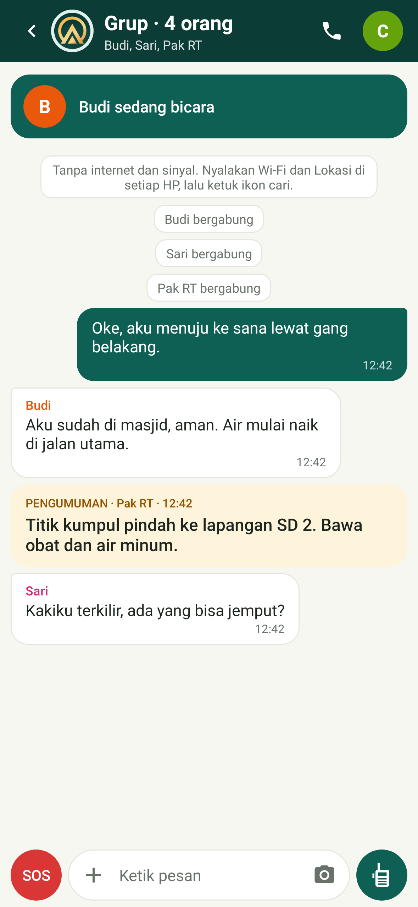
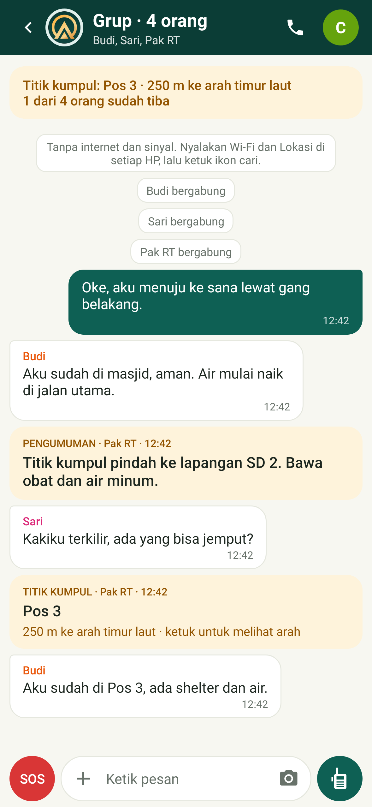
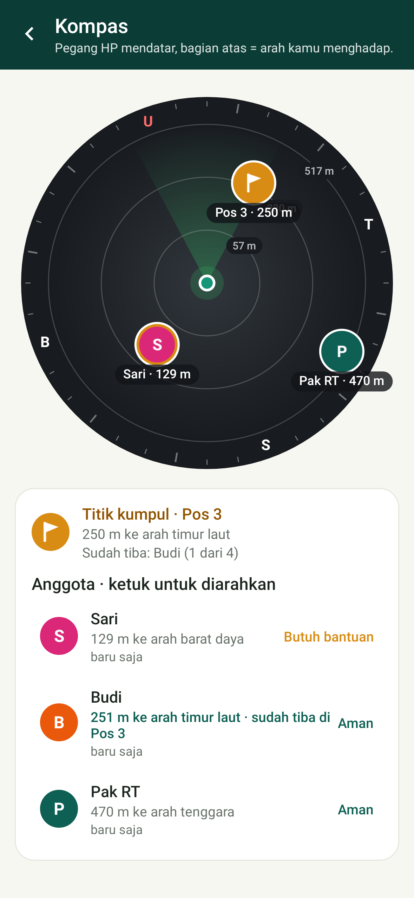
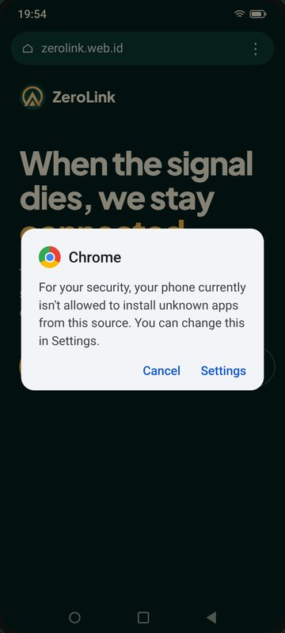
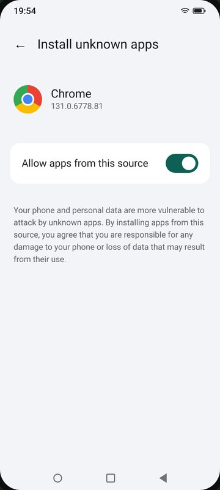
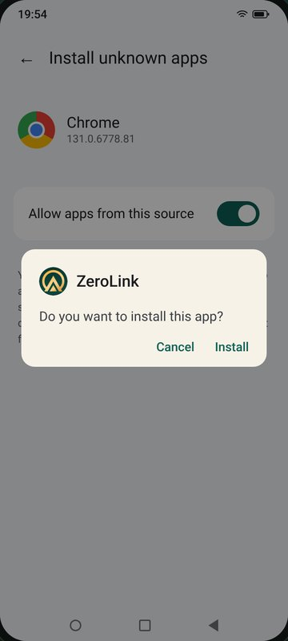
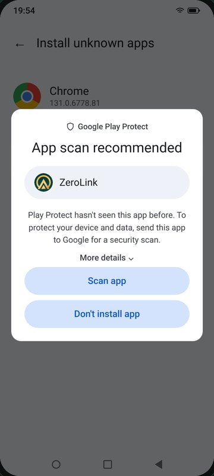
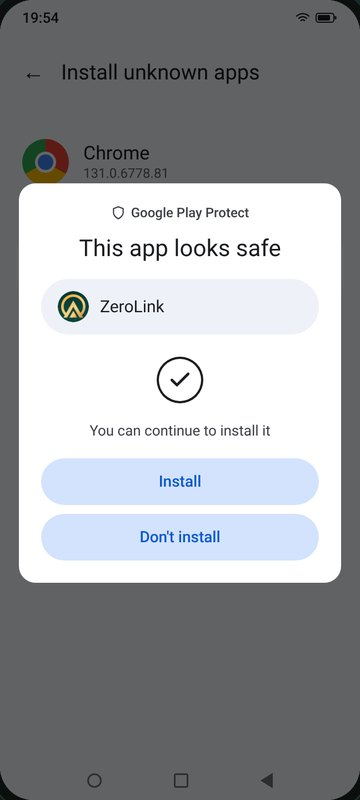
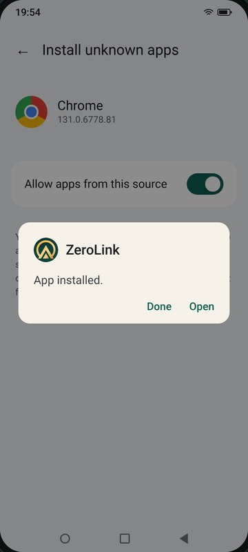

-
Listrik padam. Bar sinyal hilang.
Grup chat sepi, tapi HP masih menyala. Buka ZeroLink, ketuk cari, dan HP tetangga muncul dalam hitungan detik, langsung lewat Wi‑Fi Direct.

-
Budi tahan tombol, semua mendengar.
Walkie-talkie ke seluruh grup, atau chat kalau suasana terlalu bising. Pesan berpindah dari HP ke HP, tanpa server di tengah.

-
Pak RT memindahkan titik kumpul.
Satu pengumuman tampil di atas semua chat: Pos 3, 250 m ke timur laut. Setiap HP langsung tahu arah dan jaraknya.

-
Sari mengirim SOS.
Alarm berbunyi di semua HP, lengkap dengan jarak, arah, dan sisa baterainya: 259 m ke barat laut, baterai 21%.
-
Yang belum tiba, kelihatan.
Kompas menunjukkan posisi setiap anggota dan titik kumpul. Siapa yang sudah sampai, siapa yang masih di jalan.

Satu malam, tanpa sinyal
Begini rasanya saat BTS ikut padam.
Fitur
Semua yang dibutuhkan rombongan saat sinyal hilang.
Walkie-talkie & telepon
Tahan untuk bicara ke seluruh grup, atau beralih ke telepon dua arah.
SOS dengan arah
Alarm di semua HP, lengkap dengan jarak dan arah ke pengirim. Bisa juga lewat 5× tombol volume.
Kompas & peta offline
Radar posisi tiap anggota, plus panah besar ke yang butuh bantuan. Ketuk nama untuk diarahkan, tanpa internet.
Titik kumpul
Tandai tempat berkumpul dan lihat siapa yang sudah tiba.
Chat, foto & pesan pribadi
Ke grup atau berdua saja, terenkripsi ujung ke ujung.
Sirine & kartu medis
Sirine dan senter agar mudah ditemukan, plus info medis yang ikut terkirim bersama SOS untuk penolong.
Panduan bencana & P3K
Gempa, banjir, tanah longsor, RJP, luka bakar, dan lainnya. Tersimpan di HP, terbaca tanpa internet.
- Pesan suara
- Riwayat chat tersimpan
- Absen / hitung kepala
- Mode lansia (tombol besar)
- Cari keluarga
- Pengumuman
- Status & baterai anggota
- Mode hemat baterai
- SOS + SMS
- Sambung ulang otomatis
- Bahasa Indonesia & Inggris
Jangkauan
Dari satu gang sampai satu lembah.
Mulai dari dua HP saja. Kalau rombongan menyebar, jangkauannya bisa ditambah bertahap.
50–100m
HP ke HP
Wi‑Fi Direct langsung di area terbuka. Lebih pendek di dalam gedung.
+1HP
HP jembatan
Satu HP di tengah meneruskan pesan ke yang di luar jangkauan.
1–3km
Wi‑Fi posko
Wi‑Fi gedung, atau antena jarak jauh di posko, dengan pengarah antena.
km+LoRa
Gerbang LoRa
Alat Meshtastic meneruskan pesan dan SOS antar kelompok hingga beberapa km.
Video
Lihat cara kerjanya dalam 32 detik.
Instal
Pasang sekarang, sebelum dibutuhkan.
- Unduh APKdari halaman ini di HP Android.
- Buka filelalu izinkan instal dari sumber ini. Peringatan Android itu normal.
- Nyalakan Wi‑Fi dan Lokasiketuk cari, lalu sambungkan ke HP teman.
Belum ada di Play Store. Untuk teman tanpa internet, kirim APK lewat Quick Share atau Bluetooth.
Pakai laptop, Mac, atau iPhone? Ikut grup lewat browser, tanpa internet: lihat panduan laptop & browser.
Lihat panduan instal bergambar

Ketuk Settings
Izinkan sumber ini
Ketuk Install
Pilih Scan app
“Looks safe”
Ketuk Open
Segera hadir
Pakai iPhone, atau lebih suka lewat Play Store?
Versi iPhone
Aplikasinya sudah jadi dan bisa satu grup dengan HP Android. Untuk sekarang belum bisa dipasang: kami masih mengurus akun Apple Developer, lalu membuka uji coba lewat TestFlight. Daftar untuk ikut uji coba atau dikabari saat rilis.
Kabari sayaGoogle Play Store
Segera tersedia di Play Store, jadi tidak perlu lagi mengizinkan instal dari sumber lain dan update datang sendiri. Sambil menunggu, APK di halaman ini adalah aplikasi yang sama.
Kabari saat rilisKontakmu hanya dipakai untuk kabar ini, tidak dibagikan ke siapa pun.
Keamanan
Aman dipasang, meski bukan dari Play Store.
Lolos Play Protect
Dipindai Google saat instal: aman. Tanpa iklan, analitik, atau pelacak.
Bisa dicek keasliannya
Tiap APK disertai SHA-256 untuk dicocokkan dengan file unduhan.
Data tetap di grup
Tanpa server dan akun. Terenkripsi AES‑256‑GCM antar HP.
Tidak bisa menyamar
Pesan yang mengaku dari anggota lain ditolak.
Izin apa saja yang diminta?
| Lokasi / Perangkat sekitar | Wajib untuk Wi‑Fi Direct, juga untuk kompas dan jarak SOS |
| Mikrofon | Hanya saat tombol bicara ditahan atau mode telepon aktif |
| Notifikasi | SOS dan pesan saat layar mati |
| Tidak diminta | Kontak, SMS, galeri penuh, log panggilan |
Tanya jawab
Pertanyaan yang sering muncul.
Benar-benar tanpa internet atau pulsa?
Benar. HP boleh tanpa kartu SIM. Yang perlu menyala hanya Wi‑Fi dan Lokasi. Internet hanya dipakai untuk mengunduh APK dan, kalau mau, peta sekitar.
Seberapa jauh jangkauannya?
Sekitar 50–100 m di area terbuka, lebih pendek di dalam gedung. Lebih jauh lagi: HP jembatan di tengah, Wi‑Fi posko dengan antena jarak jauh (1–3 km), atau alat LoRa Meshtastic untuk pesan dan SOS antar kelompok hingga beberapa km.
Bagaimana cara update?
Unduh APK terbaru lalu pasang di atas versi lama. Nama, foto, dan pengaturan tetap tersimpan.
Bisa dari laptop, Mac, atau browser?
Bisa. Laptop Windows, Mac, Linux, iPhone, atau tablet ikut grup lewat browser tanpa internet, baik lewat HP Android yang membuka grupnya untuk browser maupun lewat app laptop portable. Lihat panduan dan unduhannya.
Ada versi iPhone?
Sudah dibuat, tapi belum bisa dipasang. Kami masih mengurus akun Apple Developer, lalu membuka uji coba lewat TestFlight. Di iPhone, grup disambungkan lewat mode Wi‑Fi posko: satu HP membuat grup, yang lain masuk dengan kode 6 angka di Wi‑Fi atau hotspot yang sama. Daftar untuk dikabari.
Kapan ada di Play Store?
Segera. Sambil menunggu, pasang APK dari halaman ini. Setelah versi Play Store tersedia, kamu bisa pindah tanpa kehilangan nama dan pengaturan. Minta dikabari saat rilis.
HP saya tidak menemukan grup. Kenapa?
Pastikan Wi‑Fi dan Lokasi menyala di kedua HP, izin Lokasi / Perangkat sekitar diberikan, dan jaraknya tidak lebih dari 50–100 m. Beberapa HP perlu layar tetap menyala saat mencari. Kalau masih gagal, coba sebaliknya: HP yang tadi mencari yang membuat grup.
Apakah gratis?
Gratis untuk warga, selamanya, tanpa iklan. Untuk tim SAR, posko, atau institusi yang butuh pelatihan dan kustomisasi, hubungi kami.

Hanya berguna kalau HP di sekitar Anda juga punya.
Pasang hari ini, lalu bagikan ke keluarga, tetangga, dan rombongan.